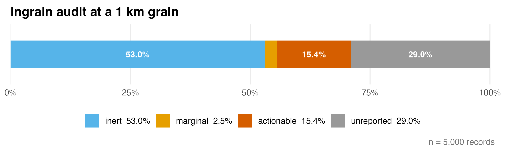
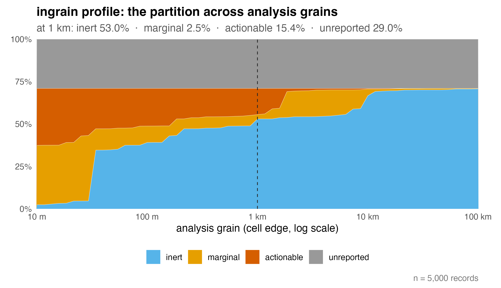
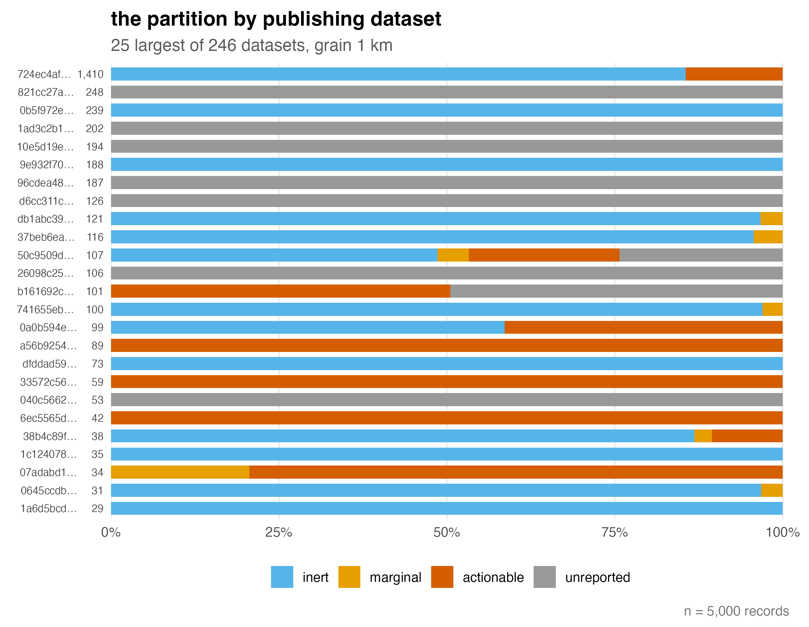

Which of your occurrence records can a positional-uncertainty correction actually touch – at your analysis resolution?
Filters and corrections for coordinate uncertainty act only on some records, and which ones depends on the grain of the intended analysis. ingrain classifies every record in an occurrence table into four states relative to a chosen raster cell edge length R, before any model is fitted:
- inert (r ≤ R/2) – the uncertainty disc fits within a cell; corrections cannot act.
- marginal (R/2 < r ≤ 3R) – the boundary band.
- actionable (r > 3R) – corrections have room to act, and the choice among them has consequences.
-
unreported (r is
NA) – no correction can act, and the radius cannot be recovered from the coordinates.
ingrain audits; it deliberately does not clean. Run it after standard coordinate cleaning (e.g. CoordinateCleaner, bdc) and before modelling.
Quick start

p <- ingrain_profile(crayfish, mark = 1000)
autoplot(p)
The grey band is flat by construction: it is the share of the data that no choice of resolution can touch. The steps in the coloured bands are real, not artefacts – reported radii cluster at publisher conventions (301 m, 1 km, 5 km, …), and the classification thresholds cross those mass points as the grain sweeps.
The audit can also be cut by publisher:
bd <- by_dataset(a)
ingrain_u(a, seed = 1)
autoplot(bd)
Most datasets sit almost entirely in one state – publishers occupy regimes, not a gradient – and ingrain_u() quantifies how much the dataset determines a record’s state: the uncertainty coefficient of the state given the dataset, read against a permutation null.
Bundled data
crayfish is a fixed random sample of 5,000 crayfish occurrence records, drawn from the 507,980-record GBIF occurrence download doi:10.15468/dl.99ezk2 and restricted to CC0/CC BY records to permit redistribution. The sample is registered as GBIF derived dataset doi:10.15468/dd.d9xgfc, which credits all 246 contributing datasets. It exists to demonstrate the package mechanics; do not use it for ecological inference.